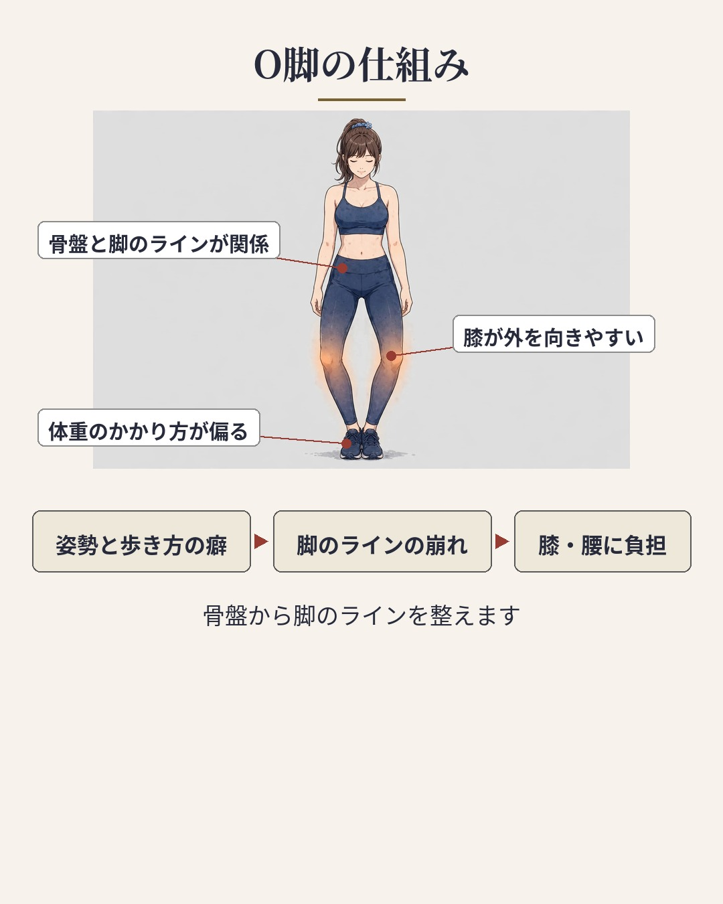

梅田でO脚ケア｜美容整体で膝の向きと脚のラインにアプローチ｜ステラポラリス 梅田・女性専用美容・見た目

まっすぐ立ったときに両膝の間が開いて見える、スカートやパンツのラインが気になる——O脚は、脚の見た目の中でも相談の多い悩みのひとつです。膝の向きと姿勢、歩き方のクセから読み解いていきます。
O脚はどんな状態か
O脚は、足をそろえて立ったときに、両膝の間が開いて脚全体が外側へ弧を描くように見える状態を指す言葉です。見た目の問題として語られることが多いものの、背景には股関節・膝・足首の向きの組み合わせや、筋肉の使い方の偏りが関係しています。
大切なのは、骨の形そのものが曲がっているとは限らないことです。立ち方や歩き方のクセで筋肉のバランスが偏り、膝が外を向きやすくなっている場合も多くあります。図1のように脚のライン全体で眺め、どこに偏りがあるかを見ることが出発点です。
こんなサインはありませんか？ — O脚のチェックリスト
- 足をそろえて立つと両膝の間が開く
- 脚が外側に張り出して見える
- 歩くと靴の外側がすり減る
- 太ももの外側の張りが気になる
- 長時間立つと膝や腰が重い
- スカートが歩くと回ってしまう
- 片足立ちがグラつきやすい
- まっすぐ歩いているつもりでも足先が外を向く
当てはまる項目が多いほど、脚の使い方に偏りが集まっている可能性があります。次の「要因」と見比べて、立ち方・歩き方のどこにクセがあるか確かめてみてください。
O脚につながりやすい要因

- 股関節の向きと使い方：股関節が内側へねじれるような使い方や、お尻の筋肉の働きが弱い状態では、膝が外へ開きやすくなります。股関節は脚のラインの起点となる場所です。
- 筋肉バランスの偏り：太ももの外側ばかりが働き、内ももやお尻の筋肉が働きにくい状態では、脚は外側へ引っ張られます。張る場所と弱い場所の組み合わせがラインを作ります。
- 歩き方のクセ：足先を外へ向けて歩く、膝を伸ばし切って着地するといった歩き方は、膝の外側への負担を繰り返します。一歩ごとの小さなクセが、ラインに積み重なります。
- 足裏の使い方：足裏の外側に体重が寄る立ち方では、すねが外へ傾き、膝も開きやすくなります。靴底のすり減り方を見ると、自分の寄り方が分かります。
- 座り方のクセ：脚を組む、横座りをする、床に座る機会が多いといった習慣は、股関節の向きに偏りを作ります。座る姿勢も脚のラインに関係しています。
- 姿勢全体の影響：骨盤の傾きや猫背といった全身の姿勢の崩れは、脚の向きにも波及します。脚だけを見るのではなく、骨盤から上の土台も含めて眺めることが大切です。
図1｜正面から見た脚のライン
東洋医学から見た考え方
東洋医学では、脚のラインは全身のバランスの表れのひとつと捉えます。下肢には胃経・胆経・膀胱経・脾経・肝経・腎経の六つの経絡が通り、太ももの外側は胆経、内側は肝経・脾経・腎経といったように、部位ごとに関連する経絡が異なります。
O脚の見立てでは、張りやすい外側の胆経のラインと、働きにくい内側のラインの両方を眺めます。施術では、張っている場所をほぐすだけでなく、内もものラインにも触れながら、脚全体のバランスを整える進め方を取ります。
代表的なツボ
O脚のケアでよく挙げられる、脚のツボを紹介します。場所は目安です。強く押すのではなく、指の腹で心地よい圧をかけることが基本です。
図2｜O脚のラインの特徴
おすすめ施術
美容整体・オイルマッサージ
施術では、まず太ももの外側やすねの張りをオイルマッサージでほぐし、働きすぎている場所をゆるめます。そのうえで美容整体で、股関節の向きや骨盤の傾き、内もものラインに触れながら、脚全体のバランスを整えていきます。
立ち方と歩き方も一緒に確認し、足裏のどこに体重が寄っているかを鏡の前で見比べます。脚のラインが整って見えるようアプローチするには、施術と日常の使い方の見直しを組み合わせることが大切です。
靴底のすり減り方も手がかりになるため、普段の靴の状態もあわせてうかがいます。90分の中で、脚だけでなく骨盤や姿勢まで含めてケアできるのが当店の進め方です。
当店の施術は、気になる部分だけをなでるのではなく、つながりのある部位まで含めて深い圧でほぐし、巡りを促しながら整えていくのが持ち味です。施術のあとに「体が軽い」「すっきりした」と感じていただける状態を目指して、90分を組み立てます。
自宅でできるセルフケア
O脚のセルフケアは「外側をほぐす・内側を働かせる・足裏を整える」の組み合わせが基本です。痛みやしびれが出る場合は無理をせず中止し、続く場合は医療機関にご相談ください。
- 1．内ももの引き寄せ椅子に座り、クッションを両膝で挟んで5秒つぶす動きを10回。働きにくい内ももの筋肉を使う練習で、テレビを見ながらでも続けられます。
- 2．太ももの外側ほぐし手のひらやテニスボールで、太ももの外側をゆっくりほぐします。張りが強い場所ほど、最初は軽い圧から始めてください。
- 3．足裏の体重移動素足で立ち、体重を内側・外側・前・後ろへゆっくり移して、足裏全体で立つ感覚を確かめます。外側に寄りやすい方は、親指の付け根にも体重を乗せる意識を。
- 4．歩き方の意識足先をまっすぐ前に向け、かかとから着地して親指側へ抜ける歩き方を意識します。最初は短い距離で、鏡のある場所で確認しながら行うのがおすすめです。
図3｜骨盤から脚へのつながり

場面別の注意
デスクワークの日
座る時間が長い日は、股関節まわりが固まりやすくなります。立ち上がったときに脚を軽く振る、階段を使うなど、股関節を動かす機会を作ってください。
ヒールや硬い靴の日
足裏の使い方が偏りやすい日は、帰宅後に足裏全体をほぐすケアを。靴底のすり減りも時々確認し、外側ばかり減る場合は歩き方の見直しどきです。
スカートや細身のパンツの日
ラインが気になる服の日は、出かける前に鏡の前で立ち方を確認するだけでも見え方は変わります。つま先と膝の向きをそろえる意識を持ってみてください。
受診の目安
次のような場合は、サロンでのケアの前に医療機関への受診をおすすめします。
- 膝に痛みがあり、腫れや熱感を伴う
- 脚の変形が進んできたと感じる
- 歩くときに膝が不安定で崩れる感じがする
- しびれや力の入りにくさがある
- 転倒やけがのあとから脚の向きが変わった
当店は医療機関ではなく、診断は行いません。迷うときは、まずかかりつけの医療機関にご相談ください。
よくある質問
Q．O脚は施術でまっすぐになりますか？
骨の形そのものを変えることはできませんが、筋肉の張りや立ち方のクセが関係している部分は、ケアで見え方が変わることがあります。当店では、脚のラインが整って見えるよう、張りと使い方の両面からアプローチします。
Q．どのくらいの期間がかかりますか？
クセの積み重ねの程度によって異なります。施術とセルフケアを組み合わせ、月1回を目安に様子を見る方が多いです。最初のご来店時に、今のラインの状態と見直しポイントをお伝えします。
Q．運動もしたほうがいいですか？
内ももやお尻の筋肉を働かせる動きは、ラインの維持に役立ちます。ページ内のセルフケアのような軽い動きから始め、痛みが出る運動は避けてください。
Q．X脚との違いは何ですか？
O脚は膝の間が開くライン、X脚は膝が近づいて足首の間が開くラインです。両方の要素が混ざる場合もあり、当日は立ち姿を見て配分を調整します。関連ページのX脚・XO脚もあわせてご覧ください。
関連するお悩みページ
関連する経絡ページ
ご予約
ステラポラリス（大阪・梅田／女性専用）｜美容整体・オイルマッサージ 90分 10,000円｜月〜土 17:00〜22:00・完全予約制・中崎町駅徒歩5分
ご予約はLINE公式アカウントで受け付けています。希望の日時と、気になる場所を送ってください。
さらに学びたい方へ：現場で使われる専門書（PR）
このページのテーマに合わせて選んだ本と、当店の施術でも参考にしている専門書です。


※本ブロックのリンクはAmazonアソシエイト・プログラムおよび楽天アフィリエイトによる広告リンクです。使用感の保証をするものではありません。